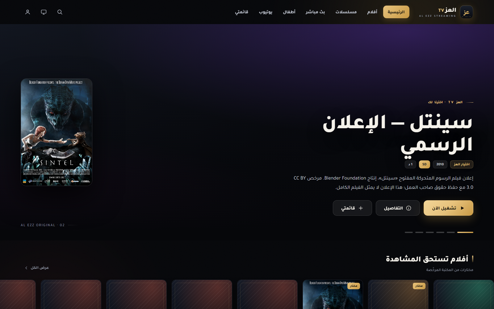
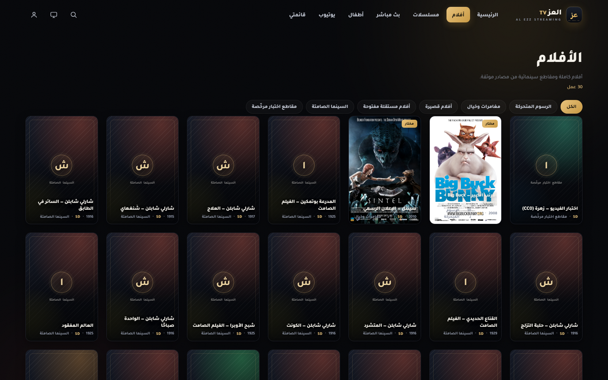
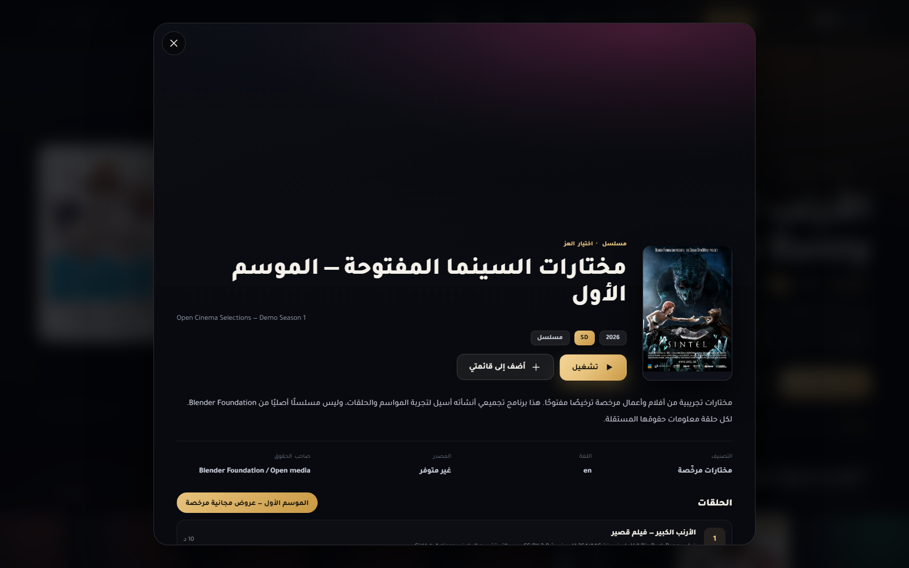

واجهة سينمائية
بوسترات طولية، صورة مميزة متغيّرة، وتدرجات تحفظ وضوح النص على كل مقاس شاشة.
الإصدار 10.0.0 · Android TV + ويب
تطبيق وموقع بواجهة واحدة: أفلام ومسلسلات وقنوات مباشرة وعالم أطفال ويوتيوب، بتصميم سينمائي عربي يعمل على التلفزيون الذكي والجوال والكمبيوتر.

واجهة واحدة للويب والتلفزيون، مبنية على مكتبة واحدة يديرها الاستوديو — أضف محتوى دون إصدار تطبيق جديد.
بوسترات طولية، صورة مميزة متغيّرة، وتدرجات تحفظ وضوح النص على كل مقاس شاشة.
الأسهم للتنقل، OK للفتح، Back للخلف، وأزرار التشغيل والتقديم تعمل داخل المشغل.
اختيار الجودة عند توفر أكثر من مصدر، مع معالجة أخطاء البث ورسائل واضحة بدل الشاشة السوداء.
المفضلة وتقدّم الحلقات محفوظة محليًا على جهازك، وتظهر «أكمل المشاهدة» في الرئيسية.
قسم مستقل يجمع الأفلام والبرامج والقنوات العائلية في مكان واحد.
مشغل YouTube الرسمي فقط — دون استخراج روابط أو إعادة استضافة أي فيديو.
نفس التصميم على التلفزيون والمتصفح والجوال. لقطات من النسخة الحالية v10.0.0.


التطبيق والموقع يُبنيان من المستودع نفسه، لذا يصل كل تحديث إلى الشاشتين في الوقت نفسه.
حزمة موحّدة تعمل على Android TV وأجهزة أندرويد الحديثة. الحد الأدنى Android 4.4.4 (API 19) بمعمارية ARMv7، ومتوافقة أيضًا مع ARM64 وx86.
افتح المكتبة من المتصفح مباشرة، أو ادخل لوحة الإدارة لإضافة الأفلام والقنوات واعتماد الحقوق.
التفعيل لمرة واحدة برمز من ستة أرقام يُحفظ على الجهاز. تفعيل المتصفح مستقل عن تفعيل التطبيق.
الهدف الأساسي شاشة Android TV قديمة بإمكانات محدودة، لذلك بُني المشروع ليعمل أولًا على الأجهزة الضعيفة.
| المنصة | الحالة | ملاحظات |
|---|---|---|
| Android TV 4.4.4 (API 19) | مدعوم | ARMv7 · ذاكرة منخفضة · واجهة مخففة |
| Android TV / Android 5+ | مدعوم | ARM64 وx86 |
| متصفح الجوال والكمبيوتر | مدعوم | نسخة ويب كاملة RTL |
| iPhone / iPad | تجريبي | لا يوجد IPA موقّع للتوزيع |
| بث HLS على أجهزة قديمة | حسب الجهاز | يعتمد على دعم الترميز في الجهاز |
نعم. كلاهما يُبنى من المستودع نفسه: واجهة الويب تُضمَّن داخل التطبيق، ويضيف التطبيق مشغلًا أصليًا للفيديو ودعم الريموت. لذلك يظهر التصميم نفسه على المنصتين.
عند أول استخدام يُطلب رمز من ستة أرقام، ويُحفظ التفعيل على الجهاز. لا يُطلب الرمز مرة أخرى إلا بعد حذف بيانات التطبيق أو تغيير حزمة التثبيت.
العز TV لا يعيد استضافة المحتوى؛ يعرض روابط مصادر خارجية. قد يتوقف رابط أو يتغيّر ترميزه أو يُقيَّد في بلد معيّن. تُدار الروابط البديلة من الاستوديو.
لا. المشاهدة لا تحتاج حسابًا. تسجيل الدخول يخص مسؤولي الإدارة فقط للوصول إلى الاستوديو.